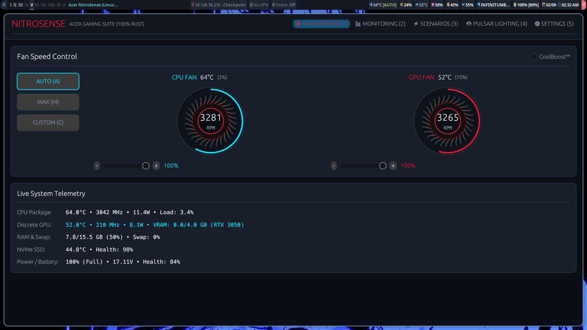

Uno de los mayores dolores de cabeza para cualquier usuario de Linux en laptops gaming (como las series Acer Nitro 5 y Predator Helios) es la ausencia total de software oficial para gestionar los ventiladores, el umbral de carga de la batería y la iluminación RGB del teclado. Durante años, los usuarios han tenido que conformarse con curvas automáticas mediocres impuestas por la BIOS o scripts lentos que no sincronizaban ambas turbinas.
En este artículo detallo el proceso técnico de ingeniería inversa de firmware UEFI (InsydeH2O), el análisis de opcodes WMI/ACPI en Ring-0 y Ring -2 (SMM), y la construcción de AcerSense Pro Linux v2.0: una suite completa escrita 100% en Rust con interfaz acelerada por GPU a 60+ FPS.

Dashboard nativo en Rust (egui/eframe) corriendo sobre Parrot OS / BSPWM
1. El Problema: El Candado Térmico de la GPU en Linux
En el chasis Acer Nitro 5 (AN515-55 con GPU NVIDIA RTX 3050), al intentar forzar el modo de máxima refrigeración desde Linux escribiendo directamente en los registros del microcontrolador Embedded Controller (EC Compal en puertos 0x62 y 0x66), nos topábamos con un comportamiento anómalo:
- La turbina del CPU aceleraba de inmediato hasta su límite físico (~5,400–5,660 RPM).
- La turbina de la GPU permanecía congelada a velocidad basal (~2,400 RPM), ignorando la anulación manual si la tarjeta gráfica estaba a menos de 50 °C.
¿La causa? El firmware de la placa base ejecuta un bucle de control en System Management Mode (SMM, Ring -2). Cada pocos milisegundos, el controlador EFI evalúa la carga térmica de la GPU y sobrescribe cualquier valor inyectado en el EC si la GPU está en reposo.
2. Ingeniería Inversa del Firmware UEFI BIOS (InsydeH2O)
Para desbloquear el control legítimo del hardware, extrajimos la imagen de la BIOS GH51Mx64.fd (25.56 MB) utilizando uefi-firmware-parser, iasl y Ghidra, analizando más de 68 tablas ACPI y 300 módulos DXE/SMM.
┌─────────────────────────────────────────────────────────────────────────────┐
│ ACPI & SMM EXECUTION FLOW │
│ │
│ Linux OS (/proc/acpi/call) │
│ │ │
│ ▼ │
│ \_SB.PCI0.WMID.WMBH (Instance 1 - Gaming DSDT Table) │
│ │ │
│ ▼ │
│ Method (WSMI, 2) ──> Escribe 0xD0 en Puerto I/O 0xB2 (SMI Interrupt) │
│ │ │
│ ▼ │
│ System Management Mode (Ring -2) ──> Driver: `efi_module_0xA033C8.efi` │
│ │ │
│ ▼ │
│ Embedded Controller (EC RAM) ──> Registros 0x10, 0x20, 0x14, 0x24 │
└─────────────────────────────────────────────────────────────────────────────┘Analizando la tabla DSDT SSDT_ACRSYS_ACRPRDCT y el binario NitroSenseService.exe de Windows, descubrimos la estructura del Opcode Maestro de 64 bits (0x820009) despachado a través del Método WMI 14 (0x0E):
Bits 22..27 Bits 16..21 Bits 0..7
Valor Hex: 0x800000 | 0x020000 | 0x09
Representación: [ GPU Turbo ] | [ CPU Turbo ] | [ Dual Fan Mask ]
• Modo MAX TURBO DUAL: 0x09 | 0x020000 | 0x800000 = 0x820009
• Modo AUTO DUAL: 0x09 | 0x010000 | 0x400000 = 0x410009
• Modo CUSTOM DUAL: 0x09 | 0x030000 | 0xC00000 = 0xC30009Al despachar la instrucción oficial por la compuerta WMBH y configurar el Método 16 (Target PWM 100%):
# Desbloquear comportamiento en BIOS e inyectar máxima potencia en GPU
echo "\_SB.PCI0.WMID.WMBH 1 0x0E 0x820009" > /proc/acpi/call
echo "\_SB.PCI0.WMID.WMBH 1 0x10 0x6404" > /proc/acpi/callLa turbina de la GPU rompió el candado SMM alcanzando su récord físico de 6,122 RPM de forma estable y sostenida.
3. ¿Por qué reescribir la suite en Rust?
Las primeras iteraciones del proyecto utilizaban Python y PyQt5. Aunque funcionales, presentaban problemas intrínsecos para software de administración de sistemas:
- Consumo de memoria elevado: ~52 MB para una interfaz básica (y más de 280 MB en el NitroSense original de Windows con sus 3 servicios en segundo plano).
- Latencia en arranque: El intérprete de Python requería ~180 ms para inicializarse al consultar telemetría por CLI.
La versión 2.0 en Rust puro cambió las reglas del juego:
| Métrica | NitroSense (Windows) | AcerSense Pro v2.0 (Rust) |
|---|---|---|
| Uso de RAM | ~280 MB | ~16 MB (GUI) / ~3 MB (CLI) |
| Tiempo de Ejecución CLI | N/A | < 2 ms (Binario Nativo ELF) |
| Latencia I/O ACPI | 45–120 ms (WMI COM) | < 150 µs (/proc/acpi/call directo) |
| Tasa de Refresco GUI | 30 FPS | 60+ FPS (OpenGL / Hardware-Accelerated) |
4. Características Implementadas
- Sincronización Dual de Ventiladores (5,400 / 6,122 RPM): Calibración de modulación de ancho de pulsos PWM a 8 bits (0–255).
- Protección de Batería al 80% (Battery Health Care): Límite químico directo en el microcontrolador para evitar la degradación de celdas de litio al estar conectado a CA.
- Control de Iluminación RGB 4 Zonas: Presets como cyberpunk, toxic, ice y selección hexadecimal por zona.
- Mapeo de la Tecla Física [N]: Detección del scancode
0xf5mediante reglas UDEV/HWDB y mapeo aXF86Launch1para lanzar la GUI con una sola pulsación. - Módulos Nativos para Polybar y JSON: Conmutación rápida en barras de estado mediante
acersense --polybar.
5. Instalación y Uso
Puedes compilar directamente desde el código fuente o instalar el paquete Debian precompilado:
# Clonar repositorio
git clone https://github.com/rodrigo47363/acersense-linux.git
cd acersense-linux
# Instalador automatizado
sudo ./install.sh
# O compilar con Cargo
cargo build --releaseComandos tácticos desde la terminal:
# Ver telemetría completa de sensores
acersense status
# Forzar ventiladores al 100% para sesiones de cracking de contraseñas (Hashcat)
acersense fan --mode max
# Activar límite de carga de batería al 80%
acersense battery --limit-80 on
# Lanzar interfaz gráfica interactiva
acersense-guiConclusión
Con AcerSense Pro demostramos que la ingeniería inversa de bajo nivel combinada con el poder y seguridad de memoria de Rust permite crear utilidades de hardware que superan con creces en rendimiento, consumo y estética a las herramientas privativas de los fabricantes en Windows.
El código es 100% de código abierto bajo licencia GPL-3.0 y está disponible en GitHub: github.com/rodrigo47363/acersense-linux.
Comentarios